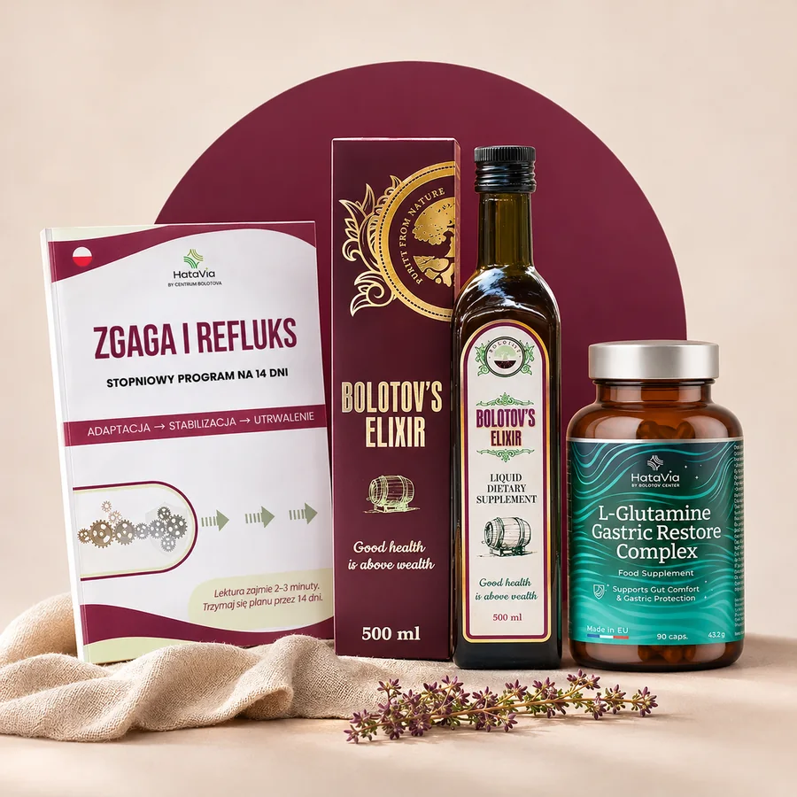
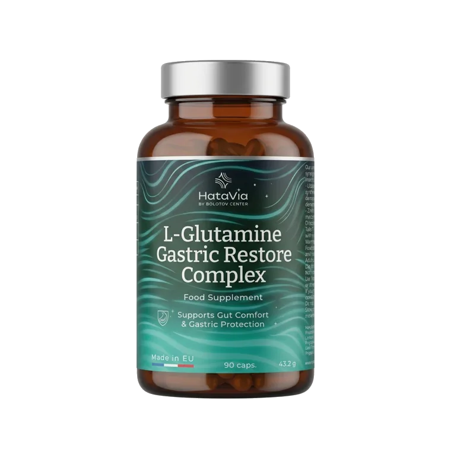

| 1 × Balzam Bolotova | 500 ml |
| 1 × L-Glutamine Gastric Restore Complex | 90 kapsułek |
| 1 × Drukowany przewodnik (w zestawie) — plan 14 dni | — |
Suplement diety · nie przekraczać porcji dziennej · nie zastępuje zróżnicowanej diety · poza zasięgiem dzieci · skład i przechowywanie: Balzam · L-Glutamine
Opakowanie wystarcza na okres do 30 dni, w zależności od wybranego schematu.
14-dniowy plan dla osób, które chcą systematycznie zadbać o codzienny komfort trawienny.
Nawracające uczucie zgagi po posiłku bywa związane nie tylko z kwasowością, ale również z zachwianą równowagą trawienia. Ten 14-dniowy plan to uporządkowane podejście z jasnymi wskazówkami stosowania — nie jednorazowe rozwiązanie, lecz stopniowe wspieranie komfortu. Wiele osób zauważa pierwsze zmiany w samopoczuciu już po kilku dniach.
Opinie klientów o Balzamie Bolotova
„Wasz balzam kupiłem ze względu na trawienie, trawienie mi się poprawiło i zmniejszyły się wzdęcia, czuję się bardzo dobrze, smak jak dla mnie jest idealny, a przede wszystkim pomaga. Balzam mogę tylko polecić!!!!”
„Dzień dobry, balzam stosuję 3 razy dziennie, trawienie się poprawiło, jestem zachwycona, bardzo dziękuję Bołotowa”
„Dzień dobry, wiem, muszę sprawdzić zapasy i na pewno znowu zamówię, nie wyobrażam już sobie życia bez Waszego balzamu
Bardzo pomaga mi na trawienie, piję go po każdym posiłku 👍👍👍”
Program zawiera konkretne wskazówki, dawkowanie oraz zalecenia dotyczące diety. Jest przeznaczony dla osób, które szukają uporządkowanego podejścia do codziennego komfortu trawiennego i wrażliwego trawienia. Zestaw łączy produkty z jasno opisanym sposobem stosowania.
Program może być odpowiedni, jeśli zależy Ci na codziennym komforcie po posiłkach — na przykład gdy zdarza Ci się uczucie zgagi, uczucie ciężkości lub dyskomfort po obfitych posiłkach. To wsparcie codziennej równowagi trawienia w ramach zrównoważonego stylu życia, a nie leczenie. Przy utrzymujących się lub poważnych dolegliwościach zalecana jest konsultacja z lekarzem.
Wspiera komfort trawienny i lekkość po posiłku w ramach zrównoważonej diety.
Balzam Bolotova oraz L-Glutamine z cynkiem-karnozyną — z jasnym schematem stosowania.
Drukowany przewodnik (w zestawie) prowadzi krok po kroku przez cały program.
Pomaga w prawidłowym funkcjonowaniu układu odpornościowego oraz przyczynia się do utrzymania prawidłowego metabolizmu makroskładników odżywczych.*
Zestaw w cenie niższej niż przy zakupie produktów pojedynczo.
Dla osób, które wolą jasny, systematyczny schemat zamiast doraźnych rozwiązań.
* Dozwolone oświadczenia zdrowotne dotyczące witaminy C i cynku (Rozporządzenie (UE) nr 432/2012).
Suplement diety na bazie witaminy C, opracowany na podstawie receptury akademika Borisa Bołotowa. Starannie dobrane składniki jakości spożywczej: fermentowany ocet winogronowy, skoncentrowany sok z czerwonych odmian winogron oraz witamina C.
Suplement diety w kapsułkach. Bez GMO, bez glutenu, bez sztucznych barwników i konserwantów. Kapsułki wegańskie.
* Dozwolone oświadczenia zdrowotne dotyczące witaminy C i cynku (Rozporządzenie (UE) nr 432/2012).
Balzam Bolotova: 1 łyżeczka 2 razy dziennie podczas posiłku lub bezpośrednio po nim. Nie spożywaj balzamu w postaci nierozcieńczonej — rozcieńcz w 100–150 ml wody i pij przez słomkę.
L-Glutamine Gastric Restore Complex: 2 kapsułki dziennie, popijając szklanką wody.
Dla najlepszego efektu stosuj produkty łącznie, zgodnie z dołączonym planem 14 dni, jako element codziennego wspierania komfortu trawiennego.
Indywidualna nietolerancja składników, ciąża, okres karmienia piersią, wiek poniżej 18 lat, ostre stany zapalne przewodu pokarmowego, podwyższona kwasowość żołądka. W przypadku chorób przewlekłych lub przyjmowania leków skonsultuj się z lekarzem.
Nie należy przekraczać zalecanej dziennej porcji. Suplementy diety nie mogą być stosowane jako substytut zróżnicowanej diety. Przechowywać w miejscu niedostępnym dla małych dzieci. Suplementy diety, nie są lekami.
Materiały mają charakter wyłącznie informacyjny.
Nazywam się Oleg i jestem założycielem Centrum Bolotova.
Przez długi czas po posiłku odczuwałem ciężkość i dyskomfort — niemal codziennie, po śniadaniu i po obiedzie. Nie szukałem rozwiązania i przywykłem myśleć, że tak po prostu musi być. Z czasem jedzenie przestało sprawiać przyjemność: siadasz do stołu i z góry myślisz o tym, jak będziesz się czuć później.
Tak poznałem akademika Borisa Bołotowa — biochemika i naukowca, który przez wiele lat zajmował się tematem odżywiania i komfortu trawiennego. Szczerze mówiąc, nie miałem wielkiej wiary. Ale postanowiłem spróbować jego podejścia do odżywiania i jego receptury — jako część codziennej rutyny.
Po kilku tygodniach złapałem się na prostej myśli: znów czerpię przyjemność z jedzenia. Z poczuciem lekkości, bez zbędnych myśli o tym, co będzie potem. Dla mnie okazało się to najważniejsze.
Właśnie wtedy zaproponowałem akademikowi stworzenie Centrum Bolotova — aby to podejście stało się dostępne dla innych.
— Oleg, założyciel i specjalista Centrum Bolotova
Osobiste doświadczenie autora; indywidualne i nie stanowi obietnicy efektów zdrowotnych. Suplement diety nie jest lekiem.
Materiał przygotowany przez specjalistę ds. żywienia.
Z wiekiem wiele osób zaczyna zwracać większą uwagę na to, co i jak je, oraz na uczucie lekkości po posiłku. Znajome uczucie ciężkości lub wzdęcia po obfitym posiłku skłania do zastanowienia się nad nawykami — i to normalne.
Kilka prostych rzeczy, które pomagają czuć się lżej:
Balzam Bolotova łatwo wpisać w taką rutynę: stosuje się go podczas posiłku, jako część zrównoważonej diety. Wspiera komfort trawienny jako element codziennego, zrównoważonego odżywiania — dla osób, które dbają o lekkość po posiłku i komfort trawienny.
Materiał ma charakter informacyjny. Suplement diety nie jest lekiem.
Materiał przygotowany przez specjalistę ds. żywienia.
Balzam powstał na podstawie wieloletnich prac akademika Borisa Bołotowa — naukowca, który poświęcił lata badaniom nad odżywianiem i zdrowym stylem życia.
Podstawę stanowią starannie dobrane składniki jakości spożywczej: fermentowany ocet winogronowy, skoncentrowany sok z czerwonych odmian winogron oraz regulatory kwasowości w precyzyjnie określonych, bezpiecznych ilościach.
Ideą jest jeden przemyślany, kompleksowy produkt zamiast wielu suplementów — odpowiednie połączenie i proporcje składników. Pochodzenie receptury i jakość potwierdzają certyfikaty — można je zobaczyć w sekcji Certyfikaty.
Materiał ma charakter informacyjny. Suplement diety nie jest lekiem.